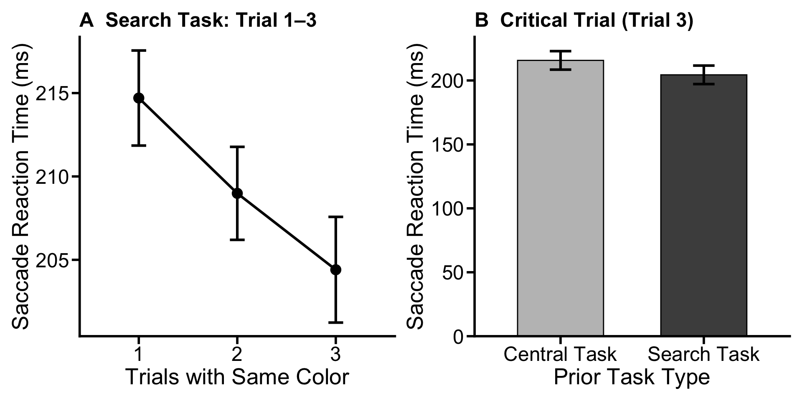

The projects should be numbered consecutively (i.e., in the order in which you began them), and should include for each project a description of the goal, the product (computer program, hand graph, computer graph, etc.), the data, and some interpretation. Reports must be reproducible and of high quality in terms of writing, grammar, presentation, etc.
This portfolio. will follow the plan we proposed in the last portfolio.
This portfolio will conduct secondary analyses on Saccade Reaction Time (SRT).
Saccade Reaction Time (SRT) is the latency from display onset to the start of the participant’s first saccade away from the central fixation point. Whereas RT reflects the end of the trial (button response), SRT reflects the beginning of the oculomotor response, i.e., how quickly the eys begin to mvoe once the search display appears.
In the search display, a salient singleton creates competition at the oculomotor level - even before the eye physically moves, the singleton activates its location in the oculomotor system, slowing the initiation of goal-directed saccades. If participants learn to proactively suppress the singleton across three trials, this oculomotor competition should be diminished, and the SRT should decrease, which means that the eyes should start moving more decisively and faster.
For the within-task analsysis, SRT is only available for the search task because central task participants were prohibited from making their eye movements on trials 1 and 2. We therefore analyze the trial-by-trial trajectory in the search task only.
However, on trial 3 of the central task, eye movements are released for the first time. This creates a direct structural parallel to the key comparison already reproted in their manuscript (Figrue 6C), which compared the oculomotor capture effect on trial 3 between search and central tasks. An analogous cross-task SRT comparison will be conducted on that trial to test the temporal equivalent of that spatial comparison: does prior suppression learning in the search task produce faster saccade initiation on the critical trial, relative to participants in the central task who search the display for the first time without any prior suppression experience.
Predicted Patterns
Two separate datasets are constructed here. The first capture the 3-trial SRT trajectory in the search task. The second extracts trial 3 SRT from both tasks for the cross-task comparison.
rm(list = ls())
setwd("~/Documents/GitHub/DS4P_Portfolio")
library('NickPsych')
library('tidyverse')
library('reshape2')
library('writexl')
library('dplyr')
library('bruceR')
library('openxlsx')
library('knitr')
library('xtable')
library('patchwork')
# Load preprocessed data
accdata <- read.csv("/Users/mumizz./Desktop/2025-2026/Courses/Data science for psych/Experiment3/Analysis Script/accdata.csv")
# Plot theme (matching manuscript style)
axis_text_size <- 20
axis_tick_text_size <- 18
graph_color <- "black"
axis_tick_length <- 0.25
axis_tick_units <- "cm"
axis_thickness <- 1
manuscript_theme <- theme_classic() +
theme(
axis.line = element_line(linewidth = axis_thickness, colour = graph_color),
axis.title = element_text(size = axis_text_size),
axis.text = element_text(colour = graph_color, size = axis_tick_text_size),
axis.ticks = element_line(linewidth = axis_thickness, colour = graph_color),
axis.ticks.length.y = unit(axis_tick_length, axis_tick_units),
axis.ticks.length.x = unit(axis_tick_length, axis_tick_units),
legend.position = "top",
text = element_text(size = axis_tick_text_size)
)# Search task, all three trials (within-task analysis)
srt_data <- accdata %>%
filter(taskType == "search", !is.na(SRT)) %>%
distinct(subjnum, trial, newtrial, SRT) %>%
group_by(subjnum, newtrial) %>%
summarise(SRT = mean(SRT, na.rm = TRUE), .groups = "drop")
srt_data %>%
group_by(newtrial) %>%
summarise(M = round(mean(SRT), 2),
SD = round(sd(SRT), 2),
n = n(), .groups = "drop") %>%
kable(caption = "Table 2a. Mean SRT (ms) by trial position (search task only).") | newtrial | M | SD | n |
|---|---|---|---|
| 1 | 214.70 | 53.34 | 40 |
| 2 | 208.99 | 51.09 | 40 |
| 3 | 204.41 | 49.66 | 40 |
In the search task, mean SRT showed a decreasing trend, with 214.70ms (SD = 53.34) on trial 1, 208.99ms (SD = 51.09) on trial 2, and 204.41ms (SD = 49.66) on trial 3, showing a progressive decrease across the 3-trial same-color sequence.
# Trial 3 for both tasks (cross-task analysis)
srt_trial3 <- accdata %>%
filter(newtrial == 3, !is.na(SRT)) %>%
distinct(subjnum, taskType, trial, SRT) %>%
group_by(subjnum, taskType) %>%
summarise(SRT = mean(SRT, na.rm = TRUE), .groups = "drop")
srt_trial3 %>%
group_by(taskType) %>%
summarise(M = round(mean(SRT), 2),
SD = round(sd(SRT), 2),
n = n(), .groups = "drop") %>%
kable(caption = "Table 2b. Mean SRT (ms) on Trial 3 by task type — cross-task comparison.")| taskType | M | SD | n |
|---|---|---|---|
| central | 215.70 | 57.48 | 40 |
| search | 204.41 | 49.66 | 40 |
On trial 3 of the central task, mean SRT was 215.70ms (SD = 57.48), matching search-task trial 1 latencies, consistent with no suppression benefit.
MANOVA(data = srt_data,
subID = "subjnum",
dv= "SRT",
within = 'newtrial',
digits = 2) %>%
EMMEANS('newtrial')##
## * Data are aggregated to mean (across items/trials)
## if there are >=2 observations per subject and cell.
## You may use Linear Mixed Model to analyze the data,
## e.g., with subjects and items as level-2 clusters.##
## ====== ANOVA (Within-Subjects Design) ======
##
## Descriptives:
## ─────────────────────────────
## "newtrial" Mean S.D. n
## ─────────────────────────────
## newtrial1 214.70 (53.34) 40
## newtrial2 208.99 (51.09) 40
## newtrial3 204.41 (49.66) 40
## ─────────────────────────────
## Total sample size: N = 40
##
## ANOVA Table:
## Dependent variable(s): SRT
## Between-subjects factor(s): –
## Within-subjects factor(s): newtrial
## Covariate(s): –
## ───────────────────────────────────────────────────────────────────────
## MS MSE df1 df2 F p η²p [90% CI of η²p] η²G
## ───────────────────────────────────────────────────────────────────────
## newtrial 1064.54 84.57 2 78 12.59 <.001 *** .24 [.11, .36] .01
## ───────────────────────────────────────────────────────────────────────
## MSE = mean square error (the residual variance of the linear model)
## η²p = partial eta-squared = SS / (SS + SSE) = F * df1 / (F * df1 + df2)
## ω²p = partial omega-squared = (F - 1) * df1 / (F * df1 + df2 + 1)
## η²G = generalized eta-squared (see Olejnik & Algina, 2003)
## Cohen’s f² = η²p / (1 - η²p)
##
## Levene’s Test for Homogeneity of Variance:
## No between-subjects factors. No need to do the Levene’s test.
##
## Mauchly’s Test of Sphericity:
## ───────────────────────────────
## Mauchly's W p
## ───────────────────────────────
## newtrial 0.9733 .598
## ───────────────────────────────
##
## ------ EMMEANS (effect = "newtrial") ------
##
## Joint Tests of "newtrial":
## ──────────────────────────────────────────────────────
## Effect df1 df2 F p η²p [90% CI of η²p]
## ──────────────────────────────────────────────────────
## newtrial 2 39 11.845 <.001 *** .378 [.169, .530]
## ──────────────────────────────────────────────────────
## Note. Simple effects of repeated measures with 3 or more levels
## are different from the results obtained with SPSS MANOVA syntax.
##
## Estimated Marginal Means of "newtrial":
## ──────────────────────────────────────────────
## "newtrial" Mean [95% CI of Mean] S.E.
## ──────────────────────────────────────────────
## newtrial1 214.702 [197.643, 231.762] (8.434)
## newtrial2 208.986 [192.646, 225.326] (8.078)
## newtrial3 204.406 [188.524, 220.287] (7.852)
## ──────────────────────────────────────────────
##
## Pairwise Comparisons of "newtrial":
## ───────────────────────────────────────────────────────────────────────────────────
## Contrast Estimate S.E. df t p Cohen’s d [95% CI of d]
## ───────────────────────────────────────────────────────────────────────────────────
## newtrial2 - newtrial1 -5.716 (1.883) 39 -3.036 .013 * -0.440 [-0.802, -0.077]
## newtrial3 - newtrial1 -10.297 (2.158) 39 -4.772 <.001 *** -0.792 [-1.207, -0.377]
## newtrial3 - newtrial2 -4.580 (2.118) 39 -2.163 .110 -0.352 [-0.760, 0.055]
## ───────────────────────────────────────────────────────────────────────────────────
## Pooled SD for computing Cohen’s d: 13.006
## P-value adjustment: Bonferroni method for 3 tests.
##
## Disclaimer:
## By default, pooled SD is Root Mean Square Error (RMSE).
## There is much disagreement on how to compute Cohen’s d.
## You are completely responsible for setting `sd.pooled`.
## You might also use `effectsize::t_to_d()` to compute d.From the within-task ANOVA on search task, trial position had a significant effect of SRT in the search task, F(2, 78) = 12.59, p < .001, η²p = .244. The large effect size indicates trial position accounts for ~25% of reliable SRT variance.
These follow-up tests directly ask: is SRT on trial 2 reliably faster than trial 1, and is trial 3 reliably faster than trial 1? They provide a fine-grained picture of when in the 3-trial sequence the speedup occurs — immediately (trial 2) or only after full suppression has developed (trial 3).
srt_wide <- srt_data %>%
pivot_wider(names_from = newtrial, values_from = SRT) %>%
rename(t1 = `1`, t2 = `2`, t3 = `3`)
t.test(srt_wide$t2, srt_wide$t1, paired = TRUE, digits = 2)##
## Paired t-test
##
## data: srt_wide$t2 and srt_wide$t1
## t = -3.036, df = 39, p-value = 0.004258
## alternative hypothesis: true mean difference is not equal to 0
## 95 percent confidence interval:
## -9.524745 -1.907857
## sample estimates:
## mean difference
## -5.716301t.test(srt_wide$t3, srt_wide$t1, paired = TRUE, digits = 2)##
## Paired t-test
##
## data: srt_wide$t3 and srt_wide$t1
## t = -4.7718, df = 39, p-value = 2.567e-05
## alternative hypothesis: true mean difference is not equal to 0
## 95 percent confidence interval:
## -14.66146 -5.93210
## sample estimates:
## mean difference
## -10.29678Follow-up tests showed that SRT was reliably faster than trial 1 at both subsequent positions. Trial 2 was significantly faster than trial 1, Mean diff = −5.72 ms, t(39) = −3.04, p = .004, 95% CI [−9.52, −1.91]. Trial 3 was still faster, with Mean diff = −10.30 ms, t(39) = −4.78, p < .001, 95% CI [−14.66, −5.93]. The trial 3 vs. trial 2 contrast did not reach significance after Bonferroni correction, indicating that the bulk of the SRT reduction occurs on the first same-color repetition, with more modest and less reliable additional gains on the second. This early-onset pattern aligns with the oculomotor capture data, in which suppression is already significant by trial 2 in the search task.
This analysis mirrors the paper’s key Panel C comparison but for SRT. On Trial 3, both tasks involve a free saccade into the search display; the only difference is whether the participant had prior suppression experience (search: yes, central: no). A paired-samples t-test tests whether that experience difference translates into a difference in saccade initiation speed.
srt_trial3_wide <- srt_trial3 %>%
pivot_wider(names_from = taskType, values_from = SRT)
t.test(srt_trial3_wide$central, srt_trial3_wide$search, paired = TRUE, digits = 2)##
## Paired t-test
##
## data: srt_trial3_wide$central and srt_trial3_wide$search
## t = 2.2333, df = 39, p-value = 0.03134
## alternative hypothesis: true mean difference is not equal to 0
## 95 percent confidence interval:
## 1.065048 21.527227
## sample estimates:
## mean difference
## 11.29614On the critical Trial 3, participants in search task initiated their first saccade significantly faster than participants in central task, with Mean diff = 11.30ms, t(39) = 2.23, p = .03, 95% CI [1.07, 21.53].
(This is an add-on step) If the trial 3 of the central task is a truly “cold” start, i.e., a first free eye movements with the search display, equivalent to having no piror suppression experience, then its SRT should be statistically indistinguishable from the trial 1 of the search task (the trial before any learning has occurred). This comparison is the logical complement, as it can rule out the possibility that the central task RST is elevated by some inherent property of the central task itself (i.e., participants actually use their covert attention system to process the singleton and distractor in the first two trials), rather than by the absence of suppression learning. Finding central task trial 3 ≈ search task trial 1 would show - the two tasks share the same starting point, and trial 3 of the search task advantage reflects specifically what two trials of suppression learning add.
# Extract central T3 and search T1 SRT, joined by participant
central_t3 <- srt_trial3 %>%
filter(taskType == "central") %>%
select(subjnum, SRT) %>%
rename(central_t3 = SRT)
search_t1 <- srt_data %>%
filter(newtrial == 1) %>%
select(subjnum, SRT) %>%
rename(search_t1 = SRT)
equiv_wide <- inner_join(central_t3, search_t1, by = "subjnum")
t.test(equiv_wide$central_t3, equiv_wide$search_t1, paired = TRUE)##
## Paired t-test
##
## data: equiv_wide$central_t3 and equiv_wide$search_t1
## t = 0.23173, df = 39, p-value = 0.818
## alternative hypothesis: true mean difference is not equal to 0
## 95 percent confidence interval:
## -7.723620 9.722334
## sample estimates:
## mean difference
## 0.9993567This comparison was not significant, t(39) = .23, p > .05, and the means were very close, central T3: M = 215.70ms; search T1: M = 214.70ms; Mdiff = 1ms). This results confirms that the trial 3 in the central task were operating from the same baseline as the trial 1 in the search task, as if searching the display for the very first time.
# Panel A: within-sequence SRT in search task
srt_plot <- with(srt_data,
cmErrBar(SRT, subjnum, as.character(newtrial), "ci"))
srt_plot$group <- factor(srt_plot$group, levels = c("1", "2", "3"))
p_srt_within <- ggplot(srt_plot, aes(x = group, y = mean)) +
geom_errorbar(aes(ymin = minus, ymax = plus), width = 0.15, linewidth = 1.1,
color = graph_color) +
geom_line(aes(group = 1), linewidth = 1.1, color = graph_color) +
geom_point(size = 4, color = graph_color) +
labs(x = "Trials with Same Color",
y = "Saccade Reaction Time (ms)",
title = "A Search Task: Trial 1–3") +
manuscript_theme +
theme(plot.title = element_text(hjust = 0, size = axis_tick_text_size, face = "bold"))
# Panel B: Trial 3 SRT by task type
srt_t3_plot <- with(srt_trial3,
cmErrBar(SRT, subjnum, taskType, "ci"))
p_srt_trial3 <- ggplot(srt_t3_plot, aes(x = group, y = mean)) +
geom_bar(fill = c("gray75", "gray30"), colour = "black",
stat = "identity", width = 0.6) +
geom_errorbar(aes(ymin = minus, ymax = plus), width = 0.15, linewidth = 1.1) +
scale_x_discrete(labels = c("central" = "Central Task", "search" = "Search Task")) +
scale_y_continuous(expand = expansion(mult = c(0, 0.05))) +
labs(x = "Prior Task Type",
y = "Saccade Reaction Time (ms)",
title = "B Critical Trial (Trial 3)") +
manuscript_theme +
theme(plot.title = element_text(hjust = 0, size = axis_tick_text_size, face = "bold"))
p_srt_within + p_srt_trial3
Figure S2. Left: Mean SRT (ms) across trial positions in the search task. Right: Mean SRT (ms) on Trial 3 by task type. Error bars = 95% CI (Cousineau-Morey corrected).
Together, the three SRT comparisons showed that the only way we can learn distractor suppression is to be overtly captured by it first, that is, the eyes must actually move onto the distractor before suppression can develop. Our results indicated that central task trial 3 was statistically indistinguishable from search task trial 1, both represent a naive first encounter with the search display. Yet search task trial 3 was significantly faster than both, and significantly faster than central task trial 3. The entire SRT advantage of the search task on the critical trial is therefore attributable to the two prior trials of suppression learning: without that experience (central task), SRT on trial 3 looks exactly like the very start of learning (search T1). These findings complement the paper’s Figure 6C — suppression learning not only reshapes where the first saccade goes but also when it departs, consistent with a broad reduction in oculomotor competition as the singleton is progressively deprioritized.